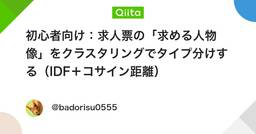

機械学習タグが付けられた新着記事 - Qiita
https://qiita.com/tags/機械学習
機械学習に関する情報が集まっています。現在16514件の記事があります。また9423人のユーザーが機械学習タグをフォローしています。
フィード

初心者向け：求人票の「求める人物像」をクラスタリングでタイプ分けする（IDF＋コサイン距離）
機械学習タグが付けられた新着記事 - Qiita
背景データサイエンティストに求められる人物像と、それに向けた対策が分からなかったため、求人票を読んで「求められやすい人物像」を推定することにしました。ただ、求人票は数が多く、1件ずつ読むのは大変です。そこで、LLMを使って効率化しています。人物像は自由記述なので、「自...
1時間前
「求める人物像」をLLMで抽出。Embeddingとクラスタリングで件数を数えてみた
機械学習タグが付けられた新着記事 - Qiita
背景データサイエンティストに求められる人物像は何か、そのためにどんな対策をするべきかが、そもそも分かりませんでした。ネット上の記事は、根拠が分からず信じきれません。そこで、求人票を1件ずつ読み込んで、どんな人が求められやすいのかを推定することにしました。ただ、求人票は...
2時間前
Python 3.15のTachyonを使って，遅いPythonコードの原因を探してみた
機械学習タグが付けられた新着記事 - Qiita
はじめに私は機械知能研究室に所属し，CV分野の研究に取り組んでいます．機械知能研究室では，ロボットの視覚機能や，自律的に行動するための知能システムに関する研究が行われています．研究室の詳細は以下をご覧ください．https://cu-milab.github.io/m...
2時間前
【AWS AIサービス解説②】Amazon SageMaker AIとは？
機械学習タグが付けられた新着記事 - Qiita
はじめにAWSには、機械学習モデルの開発から運用までを支援する「Amazon SageMaker AI」というサービスがあります。前回紹介したAmazon Bedrockは、主に既存の基盤モデルを利用して生成AIアプリケーションを構築するためのサービスでした。一方、Am...
10時間前